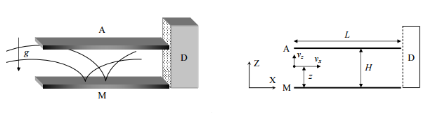

step9828 lug 2016, 22:30
Non sono sicuro di cosa voglia dire "il numero di neutroni che entra nella cavità per ... unità di velocità verticale", ma se la mia interpretazione è corretta, il risultato della prima richiesta potrebbe essere \(N(H) = \frac{4}{3} \rho H \sqrt{2gH}\) ?BeppeBogna28 lug 2016, 9:17
Nel 2002 un gruppo di fisici di Grenoble ha condotto degli esperimenti per studiare il comportamento dei neutroni in un campo gravitazionale. Nell'immagine trovate uno schizzo dell'apparato sperimentale, che consiste in uno specchio M orizzontale, su cui i neutroni rimbalzano elasticamente, un assorbitore A parallelo allo specchio, di lunghezza \(L\) e posto a un'altezza \(H\) e infine un rivelatore D, parallelo al campo gravitazionale terrestre. I neutroni vengono immessi in tale apparato a un'altezza \(z\) qualsiasi compresa tra \(0\) e \(H\) e con una velocità verticale \(v_z\) qualsiasi e con una velocità orizzontale \(v_x\) costante. Quelli che raggiungono l'assorbitore vengono eliminati dall'esperimento (si faccia l'ipotesi che \(L\) sia sufficientemente lunga da permettere l'assorbimento anche nel caso più sfavorevole).Il rivelatore D registra il numero \(N(H)\) di neutroni incidenti su di esso per unità di tempo.
1. Calcolare in maniera classica \(N(H)\), assumendo che tutti i valori di \(z\) e \(v_z\) siano equiprobabili, in funzione di \(\rho\), ovvero il numero di neutroni che entra nella cavità per unità di tempo, unità di velocità verticale e unità di altezza.
I dati sperimentali sono in disaccordo con la precedente previsione, poichè mostrano che \(N(H)\) cresce bruscamente ogni volta che vengono superate delle altezze critiche \(H_1\), \(H_2\),...,\(H_n\). In altre parole, ci sono degli effetti quantistici non trascurabili nel moto dei neutroni. Tali effetti possono essere tenuti in considerazione tramite la quantizzazione dell'azione \(S\), ovvero l'integrale della quantità di moto verticale rispetto a uno spostamento infinitesimo lungo la verticale, calcolato lungo tutto il cammino. Deve quindi verificarsi:
\(S= \int p_z(z) \mathrm{d}z =nh\)
Dove \(n\) è un intero positivo e \(h\) la costante di Planck.
2. Calcolare il valore più piccolo \(H_1\) per cui si verifica un brusco incremento di \(N(H)\).
BONUS: 3. Calcolare la minima lunghezza \(L\) necessaria per osservare il primo incremento, se \(v_x=10m/s\)
- Allegati
-

- Neutron gravitational field.png (10.49 KiB) Visto 7525 volte